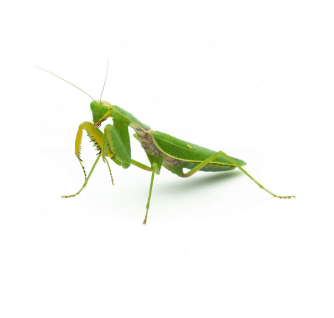
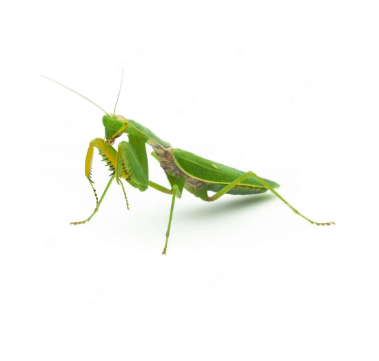

Jasper Gass
an eportfolio


This was a 2 person project developed over the course of 5 weeks. The task was to create a fake company and design a fully responsive website for it. I had a leadership role in this project as the company identity was my idea and I directed most of the coding work. Here is a live link to the project: https://iat339p2.jasperjade.repl.co/index.html
We first spent time developing our company by putting together a styleguide. After defining a company identity, we began to structure our digital workspace in GitKraken and Github in order to collaborate and save our work. This was super helpful over the course of the project because we could both work on the project at the same time and combine our edits to the main branch. I found the best method was to update the repository frequently.


 


Making the site responsive was a huge focus. We used flexboxes to get the site content to rearrange, and used a few media queries to break the content at specific viewport resolutions.

This project was a major learning experience for me because I had little prior knowledge of html and css. By the end, I felt like I was very familiar with html semantic structure and immensely improved my understanding of flexboxes and responsive web design.